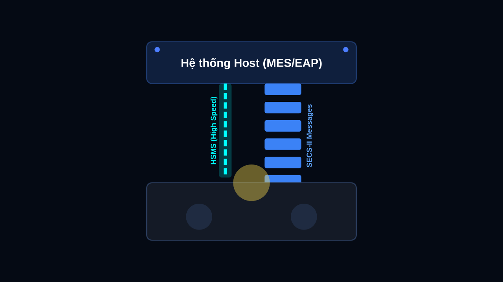

Dịch Vụ Cốt Lõi

SECS/GEM & HSMS
Chuẩn hóa giao thức truyền thông giữa thiết bị và hệ thống quản lý (MES/EAP) trong sản xuất bán dẫn.

PLC & Robot Integration
Lập trình điều khiển hệ thống PLC đa dạng hãng và tích hợp cánh tay Robot vào dây chuyền sản xuất.

Machine Vision
Hệ thống kiểm tra lỗi ngoại quan, nhận diện sản phẩm bằng AI và Camera công nghiệp độ chính xác cao.
Software Programming
Phát triển phần mềm tùy chỉnh (C#, C++, Python) phục vụ giám sát sản xuất, thu thập dữ liệu và điều khiển hệ thống công nghiệp.